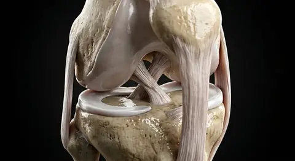

Proximal and distalParasagittal planeSuperficial and deepOblique planePatient right and leftIpsilateral and contralateralMedian sagittal planeSuperior and inferiorStandard anatomical positionSurface anatomical landmarksMedial and lateralAnterior and posteriorNormal anatomical variationTransverse (axial) planeSection versus projectionFrontal (coronal) plane
Proximal and distalParasagittal planeSuperficial and deepOblique planePatient right and leftIpsilateral and contralateralMedian sagittal planeSuperior and inferiorStandard anatomical positionSurface anatomical landmarksMedial and lateralAnterior and posteriorNormal anatomical variationTransverse (axial) planeSection versus projectionFrontal (coronal) plane- 01Median sagittal plane
- 02Frontal (coronal) plane
- 03Transverse (axial) plane
- 04Standard anatomical position
- 05Patient right and left
- 06Parasagittal plane
- 07Oblique plane
- 08Anterior and posterior
- 09Superior and inferior
- 10Medial and lateral
- 11Proximal and distal
- 12Superficial and deep
- 13Ipsilateral and contralateral
- 14Surface anatomical landmarks
- 15Section versus projection
- 16Normal anatomical variation
How this part of the body works
Without a shared coordinate system, 'left,' 'up,' or 'behind' would change every time a person rolled over—so anatomy begins with a universal map of planes and directions. Anatomical terminology begins with the subject in anatomical position: upright, facing forward and palms anterior. Relative terms refer to the subject, not the observer. Median sagittal, coronal and transverse reference planes divide the body left-right, front-back and superior-inferior; parasagittal and oblique sections serve other views. Movements are defined about joints and their axes, with limb-specific terms including pronation, dorsiflexion and inversion. The translucent planes on this digitally rendered body are conceptual, not physical membranes. Imaging orientations must be confirmed for each modality. Within the human body, the anatomical language · planes & movement (Terminologia anatomica) is situated in whole-body reference position and conceptual section planes.
Structurally, the standard anatomical position comprises upright, face forward, upper limbs at sides with palms anterior and thumbs lateral; feet directed forward. Directions use the subject’s body, not the viewer’s. Physiologically, the standard anatomical position provides a consistent reference for locations and movements. Structurally, the patient right and left comprises right and left always refer to the subject; on an anterior image, patient right usually appears on the viewer’s left. Physiologically, the patient right and left prevents reversal when describing a structure or reading a map. Structurally, the median sagittal plane comprises vertical plane through the midline dividing the body into equal right and left halves. The translucent sheet is a conceptual aid. Physiologically, the median sagittal plane governs defines exact midline relationships. Structurally, the parasagittal plane comprises any sagittal plane parallel to but displaced from the midline, yielding unequal left and right portions. Physiologically, the parasagittal plane governs locates off-center section views. Structurally, the standard anatomical position comprises upright, face forward, upper limbs at sides with palms anterior and thumbs lateral; feet directed forward. Directions use the subject’s body, not the viewer’s. Physiologically, the standard anatomical position provides a consistent reference for locations and movements. Structurally, the patient right and left comprises right and left always refer to the subject; on an anterior image, patient right usually appears on the viewer’s left. Physiologically, the patient right and left prevents reversal when describing a structure or reading a map.
Clinically, regarding the median sagittal plane, do not confuse sagittal with a front-versus-back coronal section. From a diagnostic standpoint, in the frontal (coronal) plane, coronal scans can show both kidneys and the spine on one slice. In clinical pathology involving the transverse (axial) plane, image display orientation must be checked rather than guessed. Medical evaluation of the standard anatomical position also notes that prone or supine patients retain anatomical left and right.
Connected study pathways in this atlas: Body cavities · regions & quadrants, Cells & four basic tissues, Skeleton.
Read the anatomy, part by part
These 24 structures describe anatomy related to the chapter’s regional illustration. Each entry separates location, function and a clinical point.
Standard anatomical position
Universal baseline posture in which the human body stands upright with the head, eyes, and toes directed anteriorly, the upper limbs hanging by the sides with the palms supinated (facing forward) and thumbs pointing laterally, and the lower limbs parallel. All directional terms are defined relative to this posture regardless of how a patient is positioned on an examination table.
What it doesEstablishes a single unambiguous three-dimensional coordinate system so clinicians, surgeons, and radiologists worldwide describe every structure from the same baseline.
Clinical connectionBecause the forearm is supinated in standard anatomical position, the radius and ulna lie parallel rather than crossed, and the anterior surface of the wrist always corresponds to the flexor compartment even when a patient lies supine, prone, or in lateral decubitus.
Patient right and left
Right and left in medical terminology always refer to the patient’s own right and left sides, never the observer’s perspective. When viewing an anterior anatomical illustration or a standard frontal chest radiograph, the patient’s right side appears on the viewer’s left and the patient’s left side appears on the viewer’s right.
What it doesPrevents laterality reversals when documenting physical exam findings, interpreting diagnostic scans, or planning surgical approaches across paired organs and limbs.
Clinical connectionStrict adherence to patient-centered right and left is the foundation of surgical site verification protocols and standard radiological viewing conventions (where axial CT and MRI slices are viewed as if looking upward from the patient’s feet).
Median sagittal plane
Vertical longitudinal plane passing directly through the anatomical midline of the head, neck, and trunk—intersecting the sagittal suture, nasal septum, sternum, umbilicus, and vertebral spinous processes—to divide the body into symmetrical right and left halves.
What it doesDefines the central longitudinal axis of bilateral symmetry and serves as the zero-reference line for measuring medial and lateral relationships.
Clinical connectionMidline sagittal MRI sequences are the gold standard for evaluating the corpus callosum, pituitary sella, brainstem, fourth ventricle, and cervical-to-lumbar intervertebral discs.
Parasagittal plane
Any vertical longitudinal plane oriented parallel to the median sagittal plane but offset to the right or left of the midline, dividing the body into unequal right and left portions (such as the midclavicular sagittal plane passing through the midpoint of the clavicle).
What it doesAllows clinicians and radiologists to trace off-center longitudinal structures such as the kidneys, paraspinous muscles, carotid sheaths, and shoulder or knee joints.
Clinical connectionOn sagittal MRI or ultrasound of the abdomen and spine, parasagittal slices sequentially step laterally from the midline to evaluate neural foramina, pedicles, and paired retroperitoneal viscera.
Frontal (coronal) plane
Vertical plane oriented perpendicular to the median sagittal plane (paralleling the coronal suture of the skull) that divides the body or an organ into anterior (ventral) and posterior (dorsal) portions.
What it doesOrganizes front-to-back anatomical depth and defines the plane in which limb abduction, adduction, and lateral trunk flexion occur.
Clinical connectionCoronal CT and MRI reconstructions simultaneously display bilateral structures—such as both lungs, both kidneys, the paranasal sinuses, and the hip joints—on a single comparative slice.
Transverse (axial) plane
Horizontal plane oriented perpendicular to the long vertical axis of the upright human body, dividing the trunk, head, or limbs into superior (cranial) and inferior (caudal) cross-sectional segments.
What it doesProvides the cross-sectional geometry fundamental to axial computed tomography (CT), magnetic resonance imaging (MRI), and transverse anatomical compartmentalization.
Clinical connectionClinical axial CT and MRI slices are conventionally displayed in inferior-to-superior perspective (as if standing at the foot of the bed), placing the patient’s right on the viewer’s left and the anterior body wall at the top of the image.
Oblique plane
Sectional plane oriented at an angle that is not parallel to the standard sagittal, coronal, or transverse cardinal planes, tailored to match the natural diagonal axis of an internal organ or vessel.
What it doesFollows structures whose long axes run diagonally through the body—such as the left-anterior-inferolateral axis of the heart, the ribs, the optic nerve, or the inguinal canal.
Clinical connectionEchocardiography and cardiac MRI routinely use specialized oblique views (four-chamber, short-axis, and left ventricular outflow tract planes) because the heart sits obliquely within the middle mediastinum.
Anterior and posterior
Anterior (ventral) denotes a position nearer the front surface of the body in standard anatomical position, whereas posterior (dorsal) denotes a position nearer the back surface along the front-to-back coronal axis.
What it doesEstablishes depth relationships between serial structures—for example, the sternum lies anterior to the heart, the heart lies anterior to the esophagus, and the esophagus lies anterior to the thoracic vertebrae.
Clinical connectionIn clinical neurology and embryology, ventral is often used synonymously with anterior in the trunk (e.g., ventral motor horn of the spinal cord) and dorsal with posterior (e.g., dorsal sensory root ganglion).
Superior and inferior
Superior (cranial or cephalic) indicates a position closer to the vertex of the head, whereas inferior (caudal) indicates a position closer to the soles of the feet along the vertical longitudinal axis of the body.
What it doesOrders axial structures from head to toe—for example, the thoracic diaphragm lies inferior to the lungs and heart but superior to the liver, stomach, and spleen.
Clinical connectionDuring embryological development and trunk anatomy, cranial and caudal (toward the coccygeal tail) provide posture-independent equivalents to superior and inferior along the neural axis.
Medial and lateral
Medial describes a structure situated closer to the median sagittal plane of the body, whereas lateral describes a structure situated farther away from the midline toward the right or left side.
What it doesDifferentiates paired structures, ligaments, and neurovascular bundles across the transverse width of the trunk and limbs.
Clinical connectionBecause the forearm is supinated in anatomical position, the ulna and little finger (5th digit) are always medial, whereas the radius and thumb (1st digit) are always lateral— making the medial collateral ligament of the knee tibial and the lateral collateral ligament fibular.
Proximal and distal
Proximal designates a location closer to the attachment root of a limb on the trunk (or closer to the origin of a branching tubular structure), whereas distal designates a location farther away along the limb or branch.
What it doesProvides unambiguous longitudinal orientation along the upper and lower extremities and along branching vascular, bronchial, and intestinal trees.
Clinical connectionA proximal humeral fracture involves the surgical or anatomical neck near the glenohumeral shoulder joint, whereas a distal radial fracture (such as a Colles fracture) occurs just proximal to the radiocarpal wrist joint.
Superficial and deep
Superficial (external) refers to a layer or structure positioned closer to the outer cutaneous surface of the body, whereas deep (internal) refers to a structure positioned farther inward toward the core axis.
What it doesStratifies body-wall and extremity anatomy from epidermis, dermis, and subcutaneous tela (superficial fascia) down through investing deep fascia, skeletal muscle compartments, periosteum, and visceral cavities.
Clinical connectionDistinguishing superficial from deep venous systems is vital in vascular medicine: deep venous thrombosis (DVT) in the femoral or popliteal veins carries a high risk of pulmonary embolism, unlike superficial thrombophlebitis of the great saphenous vein.
Ipsilateral and contralateral
Ipsilateral indicates two structures, pathways, or clinical signs located on the same side of the median sagittal plane, whereas contralateral indicates structures or signs located on opposite sides of the midline.
What it doesTraces decussating (crossing) versus non-decussating neuroanatomical tracts and paired vascular supply routes.
Clinical connectionBecause the corticospinal motor tract decussates in the caudal medulla, an ischemic stroke in the left cerebral hemisphere produces contralateral right-sided hemiparesis, whereas a cerebellar hemisphere lesion produces ipsilateral limb ataxia.
Flexion and extension
Sagittal-plane angular movements around a transverse joint axis: flexion generally decreases the angle between articulating bones (bringing ventral surfaces closer in the trunk, shoulder, hip, and elbow), whereas extension increases the angle back to or beyond anatomical position.
What it doesPowers forward locomotion, reaching, lifting, and postural uprightness across hinge, condyloid, and ball-and-socket synovial joints.
Clinical connectionBecause the lower limb rotates 180 degrees medially during embryonic development, flexion at the knee and toes bends the distal segment posteriorly, whereas flexion at the shoulder, elbow, wrist, and hip moves the segment anteriorly.
Abduction and adduction
Frontal-plane angular movements around an anteroposterior joint axis: abduction moves a limb or digit laterally away from the median plane (or midline of the hand/foot), whereas adduction draws it medially back toward the midline.
What it doesControls lateral limb elevation at the glenohumeral shoulder joint, pelvic stabilization via hip abductors during single-leg stance, and finger/toe spreading.
Clinical connectionIn the hand, abduction and adduction are referenced to the axial line of the middle (3rd) finger (mediated by dorsal and palmar interossei), whereas in the foot they are referenced to the second toe.
Medial and lateral rotation
Torsional movement in the transverse plane around the longitudinal axis of a long bone: medial (internal) rotation turns the anterior surface of the humerus or femur toward the median plane, whereas lateral (external) rotation turns the anterior surface away from the midline.
What it doesPositions the hand and foot in space through coordinated action of the glenohumeral rotator cuff (subscapularis vs infraspinatus/teres minor) and deep gluteal rotators of the hip.
Clinical connectionClinical testing of internal and external rotation at 0 and 90 degrees of abduction isolates individual rotator cuff tendons and detects femoroacetabular impingement at the hip.
Circumduction
Sequential compound movement combining flexion, abduction, extension, and adduction so that the proximal joint end remains at a fixed pivot while the distal limb extremity sweeps out a conical trajectory in space.
What it doesMaximizes three-dimensional workspace at multiaxial ball-and-socket (glenohumeral, coxofemoral) and biaxial condyloid or saddle (radiocarpal, first carpometacarpal) joints.
Clinical connectionSmooth circumduction requires intact capsuloligamentous restraints and sequential co-activation of antagonistic muscle groups around the joint perimeter.
Pronation and supination
Specialized rotational movements at the proximal and distal radioulnar pivot joints: in pronation, the radial head spins within the annular ligament and the distal radius crosses anteriorly over the ulna to turn the palm posteriorly; supination uncrosses the bones to return the palm anteriorly.
What it doesRotates the hand through nearly 180 degrees for tool use, turning doorknobs, and feeding without requiring shoulder displacement.
Clinical connectionBiceps brachii is the most powerful supinator of the flexed forearm (assisted by the deep supinator muscle), whereas pronator teres and pronator quadratus (innervated by the median nerve) drive pronation.
Dorsiflexion and plantarflexion
Sagittal-plane hinge movements at the talocrural (tibiotalar) ankle mortise joint: dorsiflexion lifts the dorsum of the foot superiorly toward the anterior tibia, whereas plantarflexion depresses the sole inferiorly toward the ground.
What it doesDorsiflexion clears the toes during the swing phase of gait, while powerful plantarflexion by the gastrocnemius-soleus complex via the Achilles tendon propels push-off.
Clinical connectionInjury to the common fibular (peroneal) nerve at the fibular neck paralyzes the anterior crural dorsiflexors (tibialis anterior), resulting in clinical foot-drop and a high-stepping gait.
Inversion and eversion
Frontal-plane movements occurring primarily at the subtalar (talocalcaneal) and transverse tarsal (calcaneocuboid and talonavicular) joints: inversion tilts the plantar sole medially toward the midline, whereas eversion tilts the sole laterally outward.
What it doesAllows the foot to adapt dynamically to uneven terrain while maintaining upright balance during stance and running.
Clinical connectionForced inversion of a plantarflexed ankle is the most common mechanism of lateral ankle sprain, stretching or tearing the anterior talofibular ligament (ATFL).
Thumb opposition
Composite movement at the first carpometacarpal (trapeziometacarpal) saddle joint combining abduction, flexion, and medial axial rotation of the first metacarpal so the fleshy pad of the thumb contacts the palmar pads of digits 2–5; reposition returns the thumb to anatomical position.
What it doesForms the biomechanical basis of human precision pinch (tip-to-tip and pad-to-pad) and cylindrical power grip.
Clinical connectionOpponens pollicis in the thenar eminence is innervated by the recurrent motor branch of the median nerve; severe carpal tunnel syndrome or palmar laceration causes thenar wasting (ape-hand deformity) and loss of opposition.
Surface anatomical landmarks
Consistent, externally visible or palpable bony prominences and soft-tissue contours—such as the jugular (suprasternal) notch, sternal angle of Louis (2nd costal cartilage / T4–T5 disc), xiphoid process, anterior superior iliac spine (ASIS), and C7 vertebra prominens.
What it doesBridges external physical inspection, palpation, auscultation, and procedural needle placement with deep internal visceral and neurovascular topography.
Clinical connectionThe sternal angle marks the level of the second rib for accurate intercostal space counting, the tracheal bifurcation (carina), and the junction of the ascending aorta with the aortic arch.
Section versus projection
A cross-sectional modality (CT, MRI, ultrasound, or anatomical cryosection) displays a discrete two-dimensional tissue slice of defined thickness, whereas a conventional radiographic projection (plain X-ray) superimposes all three-dimensional structures traversed by the X-ray beam onto a single flat detector plane.
What it doesExplains why overlapping bones and soft tissues obscure depth on plain radiographs but are cleanly resolved into distinct anterior-to-posterior and medial-to-lateral coordinates on cross-sectional slices.
Clinical connectionInterpreting chest radiographs requires two orthogonal projections (posteroanterior and lateral) to localize a pulmonary nodule in three dimensions, whereas a single axial CT stack provides exact volumetric coordinates.
Normal anatomical variation
Naturally occurring, non-pathological differences in organ size, lobation, vascular branching, accessory ducts, or nerve courses among healthy individuals (such as a retrocecal appendix, bovine aortic arch branching, or an absent palmaris longus tendon).
What it doesReminds clinicians and surgeons that textbook plates depict the statistically most common morphological pattern (~65–80% of individuals) rather than an invariant rule.
Clinical connectionRecognizing common arterial and biliary variations—such as a replaced right hepatic artery arising from the superior mesenteric artery during cholecystectomy—is essential to prevent intraoperative hemorrhage or ductal injury.
Five questions about Anatomical language · planes & movement
Short answers grounded in the structures described above. Use the illustrated guide for anatomical context.
What is the standard anatomical position?
The subject stands upright facing forward, with arms at the sides and palms facing anteriorly; thumbs point laterally. Right and left always belong to the subject, even when a patient is lying down. Structurally, the standard anatomical position comprises upright, face forward, upper limbs at sides with palms anterior and thumbs lateral; feet directed forward. Directions use the subject’s body, not the viewer’s. Physiologically, the standard anatomical position provides a consistent reference for locations and movements.
How do sagittal, coronal and transverse planes differ?
A sagittal plane separates right from left, a coronal plane separates anterior from posterior, and a transverse plane separates superior from inferior. The median sagittal plane passes through the midline. Structurally, the median sagittal plane comprises vertical plane through the midline dividing the body into equal right and left halves. The translucent sheet is a conceptual aid. Physiologically, the median sagittal plane governs defines exact midline relationships.
What is the difference between proximal and distal?
Proximal means closer to the point where a limb joins the trunk; distal means farther from that attachment. The elbow is proximal to the wrist in the upper limb. Structurally, the proximal and distal comprises proximal is nearer a limb’s attachment to the trunk; distal farther away along the limb. Physiologically, the proximal and distal governs describes relative position along a limb.
Why does patient right appear on the left side of a front-facing illustration?
An anterior image faces the patient. Their right side is therefore on the observer’s left. Anatomical descriptions use the patient’s own side, not the screen’s left or right. Structurally, the patient right and left comprises right and left always refer to the subject; on an anterior image, patient right usually appears on the viewer’s left. Physiologically, the patient right and left prevents reversal when describing a structure or reading a map.
Are the colored planes in this atlas real body membranes?
No. The translucent sheets are computer-generated reference planes used to explain sections. They are not physical tissues, and the chapter does not place false anatomical pins on them. Structurally, the frontal (coronal) plane comprises vertical plane dividing anterior and posterior portions; shown by a translucent sheet, not a real tissue boundary. Physiologically, the frontal (coronal) plane governs organizes front-to-back relationships.
Related anatomy guides
Follow these connected structures and body systems in the illustrated atlas.
 Cells & four basic tissuesHow cell organelles and the four fundamental human tissues—epithelial sheets, connective matrix, contractile muscle, and excitable neurons—build every organ.↗
Cells & four basic tissuesHow cell organelles and the four fundamental human tissues—epithelial sheets, connective matrix, contractile muscle, and excitable neurons—build every organ.↗ SkeletonAll 206 named adult bones—80 axial and 126 appendicular—plus compact osteons, spongy trabecular struts, red marrow cavities, and major joint families.↗
SkeletonAll 206 named adult bones—80 axial and 126 appendicular—plus compact osteons, spongy trabecular struts, red marrow cavities, and major joint families.↗
Joints & ligamentsHow fibrous sutures, cartilaginous symphyses, and fluid-lubricated synovial capsules balance smooth anatomical motion with ligamentous joint stability.↗Further reading
General anatomy references and related source chapters for continued study. These links do not make the digital illustrations clinical images or certify every anatomical variant.
This educational page is not medical advice and has not undergone formal clinical peer review. Spotted an error? Contact the editor.
Open the realistic interactive plate, label lines, focus view and self-test.